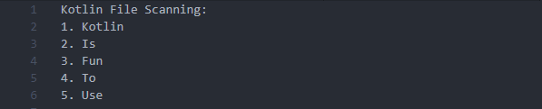
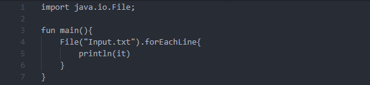

File I/O
File scanning with Kotlin is pretty easy to do. First we are going to create an input file that we will be having Kotlin read. We will name it Input.txt. Its contents will be:
Next to read line by line we will first create a file object and give it the input file's name. We then will call the files forEachLine method. This method will read each line with a reference to the line being refered to by the idetifier it.
